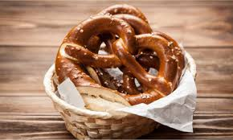

Pretzel
Thông tin cơ bản:
Pretzel là món bánh vòng muối nổi tiếng của Đức, có vỏ giòn và bên trong mềm, thường dùng làm đồ ăn nhẹ hoặc ăn kèm bia trong các lễ hội.

Nguyên liệu:
- Bột mì
- Nước, muối
- Bơ
- Baking soda
Cách làm:
- Nhào bột rồi tạo hình Pretzel.
- Nhúng qua nước pha baking soda.
- Nướng vàng giòn.